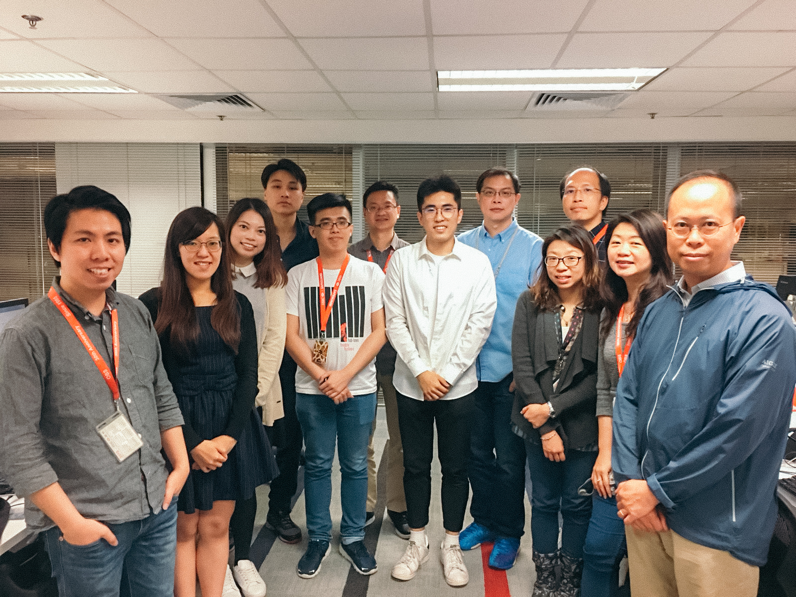

My gap year:
Placement at HSBC
May 9, 2018

I spent 10 months as an Industrial Placement Trainee at HSBC. I was assigned to the EPS IT team under the Online Banking System department, where I was trained to solve numbers of IT problems and obtained a thorough appreciation of how technology could contribute to a bank system. Hong Kong is well-known for its banking business. Before I joined HSBC, I have always been curious about what it would be like to work in a bank as an engineer. Working in the EPS team was the best way for me to explore this industry and gave me opportunities to improve my professional and personal skills.
EPS processor is a 24x7 critical online application, connected with over 20 member banks to support retail POS transactions, PPS bill payment, bank bill payment and over-the-counter bill payment. In order to make sure the bank cards from a wide range of banks can support the EPS transaction, I was mainly responsible for the card testing on the POS terminals as well as on the simulator which simulates the transaction process on the computer. Additionally, I have to cooperate and communicate with different people such as server manager and IT staff to ensure a successful testing to be performed. Sometimes the transaction would be rejected due to various reasons involving network problem, which would cause the communication timeout, and the incorrect card data, which would cause the card verification failed. Solving those problems indeed improved my problem-solving skills and interpersonal skills, and in turns let me understand more about EPS system.

In particular, I have once participated in a project named “pure cash back project”. “Pure cash back” could allow users to withdraw cash without buying anything in the convenience store such as Circle K. My main job was to write JCL and COBOL programs to generate transaction reports that can display the pure cash back transaction details. JCL and COBOL are programming languages that I never used and even never heard before. At that time, I only got 3 weeks to finish the coding and testing, which means I had to learn these two languages quickly and independently. Although I felt great pressure, I still completed my codes on time and successfully finished the health check of my program. Now the pure cashback project was successfully released in Hong Kong and I was really proud of what I have done in this project. Meanwhile, I was really thankful for this experience for pushing me to learn unfamiliar programming languages and for improving my anti-pressure abilities.
This placement is definitely unforgettable because there were many “first times” of my life happened during my work. I could still remember the first VBA program I wrote to help to generate testing cases for PPS bill payment testing, first time using Linux command to deploy the server, and the first business trip to HKT for the dialling connection test. There is no doubt that the first ever trying would always be difficult and I was glad that I dared to move out of my comfort zone and overcame those challenges during my work.
What I think this placement benefitted me the most was the improvement of my interpersonal skills. Before I joined the HSBC, I was afraid that I could not communicate well with my colleagues because of my poor Cantonese speaking. However, it, in fact, turned out that my colleagues did not mind about my bad Cantonese at all and did not repel me because I am from other countries with different backgrounds. We had lunch together every day and we developed great relationships with each other. Meanwhile, the team meeting every two weeks was also a perfect opportunity for me to study Cantonese. Eventually, my Cantonese improved quickly, and I am truly pleased that I can talk with my colleagues in Cantonese articulately.
During my placement at HSBC, I have experienced the challenges of a technology-driven business environment, contributing to meaningful projects that have a direct impact on the business success. I have gained an understanding of the role of technology in a leading global bank and developed a strong foundation of technical knowledge. I believe these experiences and skills would benefit me to achieve a successful career in the soon future.